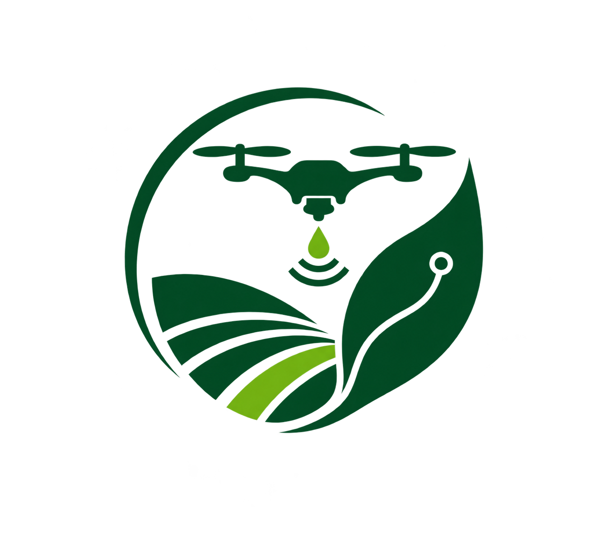

ชื่อแปลง—
พื้นที่— ตร.ม.
มาตราไทย—

จิ้มวางจุดรอบแปลง หรือลากจุดเพื่อย้าย
การตรวจสุขภาพทรงพุ่มเบื้องต้นเพื่อส่งให้ AI ทวนสอบ (ไม่มีผลเปลี่ยนปริมาณปุ๋ยที่จ่ายจริง)
ยังไม่ได้เชื่อมต่อ SDK โดรน Wi-Fi อัตโนมัติ — กด "เพิ่มรูปภาพ" ด้านล่างเพื่อวิเคราะห์ความเขียวแทนได้ทันที
ดินในแปลงมีธาตุอาหารเพียงพอตามเกณฑ์ของระยะเติบโตนี้แล้ว (ไม่ต้องเติมปุ๋ยเพิ่ม)
ตอนถ่ายคลิป: นำน้ำปุ๋ย 8–10 ml ใส่ตลับใต้โดรน • เป้าหมายจริง: โดรนเข้าจุดจอดรับน้ำใต้ก๊อกเติมอัตโนมัติแล้วบินพ่นทันที